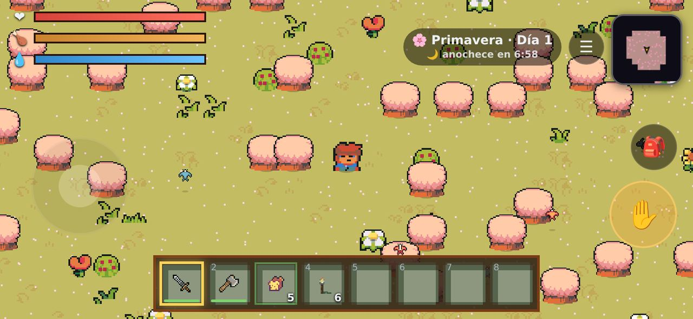
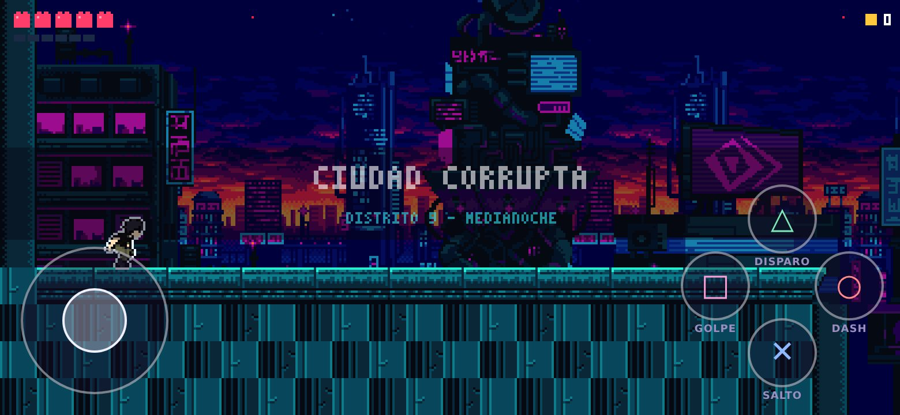
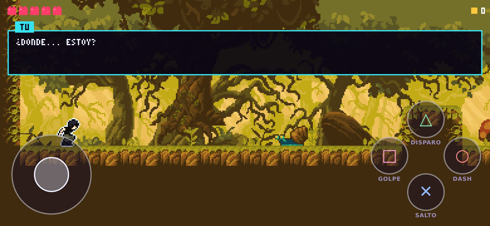
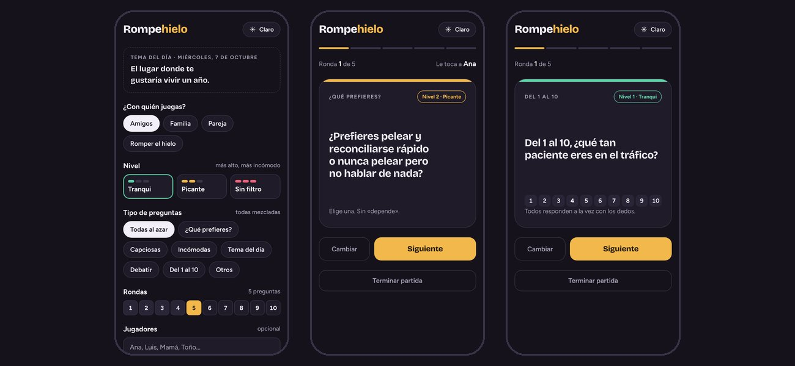

Juegos y apps para tu celular.
Gratis, sin crear cuenta y sin internet. Hechos en México.

▶ Video, fotos y los 174 objetos- Junta, fabrica y construye: decenas de recetas, herramientas, armaduras, cultivos y ganado.
- Día y noche: de noche salen zombis; de día, ladrones. 8 jefes y 5 mazmorras.
- Minas con pisos escondidos que cambian cada semana.
- Aldeas con oficios y un gremio con 15 misiones al día, rangos de F a S+, bar y posada.
Grieta
Metroidvania de acción: cae por la grieta y descubre qué hay del otro lado.


- Prólogo en la Ciudad corrupta y primer tramo del bosque, con Karen como ayudante.
- Salto de pared, dash, rebote sobre enemigos y sub-arma; las habilidades se encuentran explorando.
- Controles táctiles tipo mando: joystick y cuatro botones. También con control o teclado.
Rompehielo
Preguntas al azar para platicar con amigos, en familia, en pareja o con gente que apenas conoces. Nadie gana.

- Para amigos, familia, pareja o para romper el hielo, en 4 niveles: Tranqui, Picante, Sin filtro y Al límite (mientras más alto, más difícil de contestar).
- ¿Qué prefieres?, capciosas, incómodas, tema del día, debates con cronómetro, del 1 al 10 y retos: más de 1,100 preguntas, y no se repiten hasta que ya salieron todas.
- De 1 a 10 rondas, con nombres para saber a quién le toca y modo «pásalo», que tapa la pregunta hasta que el celular llega a su dueño.
- Tema oscuro o claro. Un solo celular para todo el grupo.
⚠️ ¿Por qué mi teléfono me avisa?
Android muestra una advertencia con cualquier app que no viene de Google Play. No significa que se haya encontrado algo malo: solo que Google no la revisó.
Estas apps todavía no están en Google Play. Cuando lleguen, la advertencia desaparecerá.
- ✓Tu partida se guarda solo en tu teléfono.
- ✕No piden cuenta, correo, contactos, ubicación, micrófono ni fotos.
- ✕No necesitan internet para jugar.
Cómo instalar
- Toca «Descargar»Hazlo desde Chrome. Si avisa que el archivo puede ser dañino, elige «Descargar de todos modos».
- Abre el archivo descargadoAndroid pedirá permitir instalar apps desde Chrome: actívalo solo para esto.
- InstalarToca «Instalar» y luego «Abrir». Para actualizar, descarga la versión nueva e instálala encima: no pierdes tu partida.
Preguntas frecuentes
¿Son gratis?
Sí. No se compra nada con dinero real.
¿Qué datos guardan?
Ninguno fuera de tu teléfono: no hay cuentas ni servidor. Si borras la app, se borra tu partida. Lee el aviso de privacidad.
¿Se puede jugar con amigos?
Tierralma: sí, cerca de ti por Bluetooth, hasta 10 jugadores (es una función de prueba); no hay juego por internet todavía. Rompehielo: sí, en grupo pasando un solo celular. Grieta es para jugar solo.
¿Funcionan en iPhone?
Por ahora no: solo Android 7 o superior.
¿Y la red social NEONPLAY?
Está en pausa por ahora. Avisaremos cuando regrese.